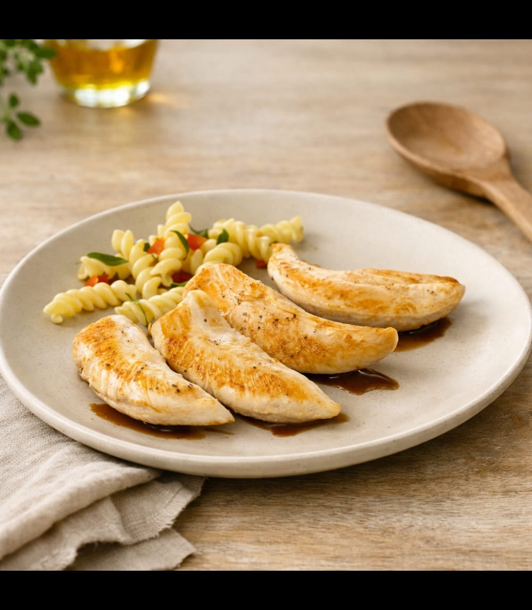

Astuce Bontin
1 kg,
c'est trop ?

Aiguillette de poulet
1 kg · 13,30 €
Prenez le petit format !
Exclusivité retrait
Les petits
formats
Même prix au kilo, en plus petit.
57 produits · retrait gratuit, sans minimum
Retrait gratuit sous 24h à Plouédern
Aiguillette de poulet
Conditionnement
400 g — 5.32 €600 g — 7.98 €1 kg — 13.30 €1.5 kg — 19.95 €
13.30 €/kg
13.30 €
−1+
Ajouter au panier
Ajouté au panier
Poêle6-8 min à feu vif
Airfryer8-10 min à 180°C
Votre panier
AIGUILLETTE DE POULET
400 g
5.32 €
ModeRetrait
Sous-total5.32 €
Total5.32 €
Vos coordonnées
Je crée mon compteJ'ai déjà un compte
Commande disponible sous 24h au dépôt
JOUR DE RETRAIT
— choisir un jour —Mercredi 2 décembre
CRÉNEAU HORAIRE
— choisir d'abord un jour —10h00 - 10h30
Paiement sur place, à la récupération de la commande.
Créer mon compte et valider la commande
Merci !
Commande confirmée
Rendez-vous au dépôt le mercredi 2 décembre, 10h00 - 10h30.
Le paiement se fait sur place, à la récupération.
Le paiement se fait sur place, à la récupération.
ZI de Keriel Nord, 29800 Plouédern
Retrait gratuit
sous 24 h
Dépôt ZI de Keriel Nord · Plouédern
Du lundi au vendredi · paiement sur place
Commandez sur bontin.fr